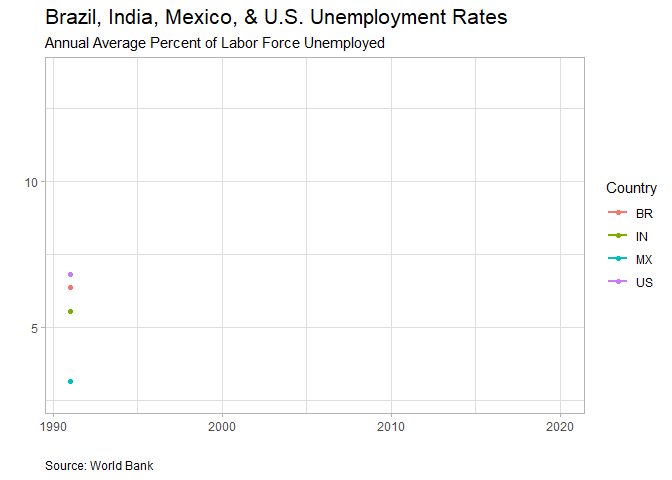

Materials for ECON200: Introductory Macroeconomics
2020-06-23
Preface
This site will include supplemental material to our regular macroeconomics course readings. Mostly this will be used to show you how we can use publicly available data to create tables and figures to help us understand and analyze the economy. This material will accompany Taylor and Weerapana (2018) which will be the primary book for the course. We will also be using The CORE Team (2020c), and the other materials compiled by CORE including Economy, Society, & Public Policy (The CORE Team 2020b) and Doing Economics (The CORE Team 2020a) which act as useful comparisons to the more traditional material presented in Taylor and Weerapana (2018).

References
Taylor, John B., and Akila Weerapana. 2018. Principles of Economics. Boston, MA: FlatWorld.
The CORE Team. 2020a. Doing Economics. New York, NY: Oxford University Press. https://www.core-econ.org/doing-economics/index.html.
The CORE Team. 2020b. Economy, Society, & Public Policy. New York, NY: Oxford University Press. https://www.core-econ.org/espp/index.html.
The CORE Team. 2020c. The Economy. New York, NY: Oxford University Press. https://core-econ.org/the-economy/?lang=en.